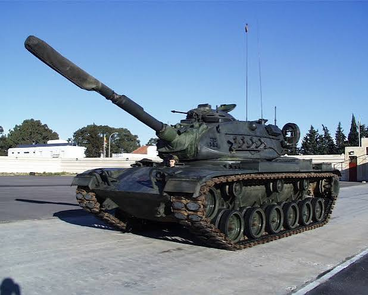
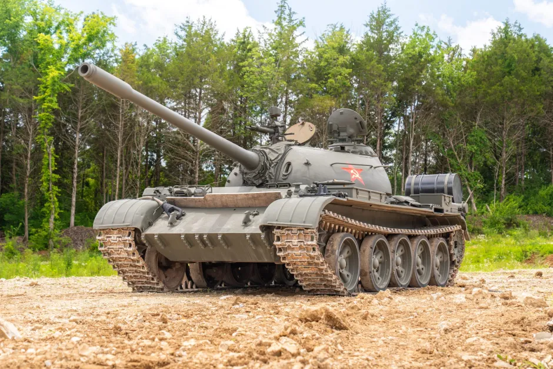
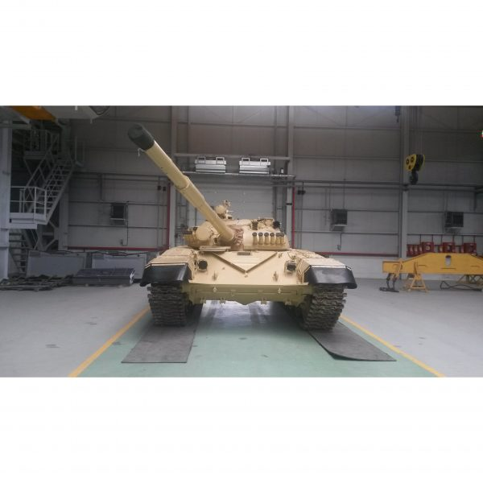
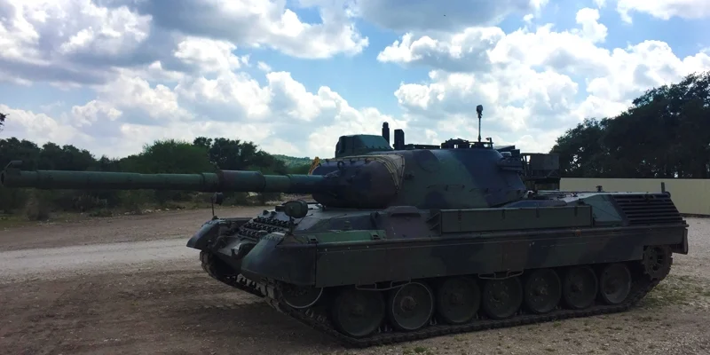

Available MBTs
All tanks listed below are authentic Cold War models, fully restored and maintained.
M60 Patton — $150,000

A reliable American MBT known for durability, firepower, and decades of service across multiple nations.
T‑54 — $85,000

One of the most iconic Soviet tanks ever produced, valued for simplicity, ruggedness, and ease of maintenance.
T‑72 — $300,000

A modernized Soviet MBT equipped with a powerful 125mm smoothbore cannon and advanced armor for its era.
Leopard 1 — $273,000

A German MBT engineered for speed, accuracy, and battlefield mobility, widely respected for its precision.